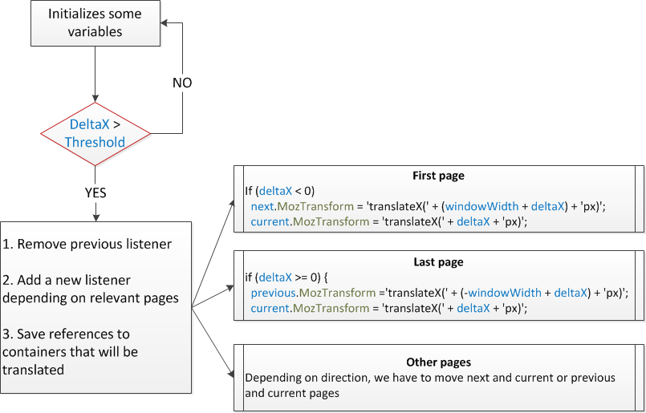

Introduction
Details about how to implement applications in FFOS that have sophisticated user interactions
The context
Web Browser (HTML, CSS, Javascript). Technology. Transitions, Animations, Events (Mouse, Touch)
Cases of Study
Homescreen panning and drag&drop
Homescreen panning
Functional requirements
- Icons will be placed in different pages
- Each page will show a grid layout composed by them
- Users will be able to navigate among different pages
- Minimum 55 FPS
- Implement a drop shadow for icon apps
Dummy Approach
Dummy Approach - Markup
- Huge wrapper containing all pages (orange line in chart)
- Page containers fitted to the screen resolution
- Icons are items for unordered lists
<section id="wrapper">
<div class="page">
<ul>
<li>Icon</li>
<!-- More icons... -->
</ul>
</div>
<!-- Rest of pages -->
</section>
Dummy Approach - Styles
#wrapper {
height: calc(100% - 7rem);
}
#wrapper .page {
width: 100%; height: 100%;
display: inline-block;
}
- Drop shadows defined by means of box-shadow property
#wrapper .page > ul > li .icon {
box-shadow: 1rem 1rem .5rem #888888;
}
Dummy Approach - Behavior
- Wrapper translated in X-axis (CSS3 Transformations)
- Listening for all touch events and calculate gesture direction for each touchmove event received
switch (evt.type) {
case 'touchstart':
// Save start postion, initialize deltaX,...
case 'touchmove':
// Calculate startX, deltaX, threshold to start panning,
// direction of the gesture,...
wrapper.MozTransform = 'translateX(' + deltaX) + 'px)';
case 'touchend':
// Actually the user clicked on icon or was panning?
}
Why it is not a good solution
- Frame rate about 25-30 per second
- Continous reflows while the pages are translated
- Several allocations while panning (tons of calculations)
- High consume of memory (all pages in memory)
- Some CSS properties are not completely optimized in Gecko

Final implementation

Avoid reflows!
- DOM Elements bigger than screen WILL be repainted while translating or scaling
- The performance translating three pages at the same time is better than translating the whole wrapper which is bigger than the screen. Why? Three containers better than one, really? :(
- Gecko applies cache to DOM elements during translations avoiding continuous reflows
- If you want to achieve a good frame rate, please don't try to change styles while transformations
- Take a look to requestAnimationFrame
Avoid allocations in critical code I
- Spend your time re-thinking your code
- Dedicated handlers for panning depending on relevants pages based on the direction of the inputs.
- Source code
Avoid allocations in critical code II

Pay attention to memory consumption
- Just previous, next and current pages are displayed
- Rest of pages are not consuming memory by means of display property to none
- Don't listen for all events all the time:
- Start listening for touchstart
- Received this one, you can add handlers for touchmove and touchend. After that remove the previous one
- When the user releases his finger, you can remove those handlers and add again the listener for touchstart
Becareful with some CSS properties
- Sadly not all CSS properties are optimized in Gecko
- What properties you should avoid in transformations?
- Opacity changes
- Box-shadows and text-shadows
- SVG masks and filters
- As you know, one requeriment was to apply a drop shadow to app icons. We had to paint our icons by means of canvas elements. Once they are created, images are added to the DOM with blobs generated from them
- Read about URL.createObjectURL and URL.revokeObjectURL
Hardware restrictions vs Imagination
- Faster panning based on prediction and movement velocity
- Not covered by this presentation
What's coming
Pointer events